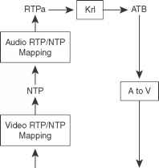

Video Lip Sync
Abstract |
video lip sync |
Authors |
Walter Fan |
Status |
WIP |
Updated |
2026-03-05 |
问题的原因
这个问题的原因主要在于音频的采集， 编码，传输， 解码， 播放与视频的采集，编码，传输，解码以及渲染一般是分开进行的，因为音频和视频采集自不同的设备，即它们的来源不同，在网络上传输也会有延迟，也由不同的设备进行播放，这样如果在接收方不采取措施进行时间同步，就会极有可能看到口型和听到的声音对不上的情况。
由此派生出 ３ 个小问题：
如何将来自同一个人或设备的多路 audio 及 video stream关联起来?
如何将 RTP 中的时间戳 timestamp 映射到发送方的音视频采集时间
如何调整音频或者视频帧的播放时间，让它们怎么之间相对同步？
解决方案
如何关联来自同一个人或设备的多路 audio 及 video stream?
对于多媒体会话，每种类型的媒体（例如音频或视频）会在单独的 RTP 会话中发送， 接收方通过 CNAME 项关联要同步的RTP流, 而这个 CNAME 包含在发送方所发送的 RTCP SDES 中
SDES 数据包包含常规包头，有效负载类型为 202，项目计数等于数据包中 SSRC/CSRC 块的数量，后跟零个或多个 SSRC/CSRC 块，其中包含有关特定 SSRC 或 CSRC，每个都与 32 位边界对齐。
0 1 2 3
0 1 2 3 4 5 6 7 8 9 0 1 2 3 4 5 6 7 8 9 0 1 2 3 4 5 6 7 8 9 0 1
+-+-+-+-+-+-+-+-+-+-+-+-+-+-+-+-+-+-+-+-+-+-+-+-+-+-+-+-+-+-+-+-+
|V=2|P| SC | PT=SDES=202 | length L |
+=+=+=+=+=+=+=+=+=+=+=+=+=+=+=+=+=+=+=+=+=+=+=+=+=+=+=+=+=+=+=+=+
| SSRC/CSRC_1 |
+-+-+-+-+-+-+-+-+-+-+-+-+-+-+-+-+-+-+-+-+-+-+-+-+-+-+-+-+-+-+-+-+
| SDES items |
| ... |
+=+=+=+=+=+=+=+=+=+=+=+=+=+=+=+=+=+=+=+=+=+=+=+=+=+=+=+=+=+=+=+=+
| SSRC/CSRC_2 |
+-+-+-+-+-+-+-+-+-+-+-+-+-+-+-+-+-+-+-+-+-+-+-+-+-+-+-+-+-+-+-+-+
| SDES items |
| ... |
+=+=+=+=+=+=+=+=+=+=+=+=+=+=+=+=+=+=+=+=+=+=+=+=+=+=+=+=+=+=+=+=+
如何将 RTP 中的时间戳 timestamp 与 wall clock 挂钟时间映射
对于每个 RTP 流，发送方定期发出 RTCP SR, 其中包含一对时间戳：
NTP 时间戳以及与该 RTP 流关联的相应 RTP 时间戳。
这对时间戳传达每个媒体流的 NTP 时间和 RTP 时间之间的关系。
先回顾一下 RTP packet 和 RTCP sender report
0 1 2 3
0 1 2 3 4 5 6 7 8 9 0 1 2 3 4 5 6 7 8 9 0 1 2 3 4 5 6 7 8 9 0 1
+-+-+-+-+-+-+-+-+-+-+-+-+-+-+-+-+-+-+-+-+-+-+-+-+-+-+-+-+-+-+-+-+
|V=2|P|X| CC |M| PT | sequence number |
+-+-+-+-+-+-+-+-+-+-+-+-+-+-+-+-+-+-+-+-+-+-+-+-+-+-+-+-+-+-+-+-+
| timestamp |
+-+-+-+-+-+-+-+-+-+-+-+-+-+-+-+-+-+-+-+-+-+-+-+-+-+-+-+-+-+-+-+-+
| synchronization source (SSRC) identifier |
+=+=+=+=+=+=+=+=+=+=+=+=+=+=+=+=+=+=+=+=+=+=+=+=+=+=+=+=+=+=+=+=+
| contributing source (CSRC) identifiers |
| .... |
+-+-+-+-+-+-+-+-+-+-+-+-+-+-+-+-+-+-+-+-+-+-+-+-+-+-+-+-+-+-+-+-+
0 1 2 3
0 1 2 3 4 5 6 7 8 9 0 1 2 3 4 5 6 7 8 9 0 1 2 3 4 5 6 7 8 9 0 1
+-+-+-+-+-+-+-+-+-+-+-+-+-+-+-+-+-+-+-+-+-+-+-+-+-+-+-+-+-+-+-+-+
header |V=2|P| RC | PT=SR=200 | length |
+-+-+-+-+-+-+-+-+-+-+-+-+-+-+-+-+-+-+-+-+-+-+-+-+-+-+-+-+-+-+-+-+
| SSRC of sender |
+=+=+=+=+=+=+=+=+=+=+=+=+=+=+=+=+=+=+=+=+=+=+=+=+=+=+=+=+=+=+=+=+
sender | NTP timestamp, most significant word |
info +-+-+-+-+-+-+-+-+-+-+-+-+-+-+-+-+-+-+-+-+-+-+-+-+-+-+-+-+-+-+-+-+
| NTP timestamp, least significant word |
+-+-+-+-+-+-+-+-+-+-+-+-+-+-+-+-+-+-+-+-+-+-+-+-+-+-+-+-+-+-+-+-+
| RTP timestamp |
+-+-+-+-+-+-+-+-+-+-+-+-+-+-+-+-+-+-+-+-+-+-+-+-+-+-+-+-+-+-+-+-+
| sender's packet count |
+-+-+-+-+-+-+-+-+-+-+-+-+-+-+-+-+-+-+-+-+-+-+-+-+-+-+-+-+-+-+-+-+
| sender's octet count |
+=+=+=+=+=+=+=+=+=+=+=+=+=+=+=+=+=+=+=+=+=+=+=+=+=+=+=+=+=+=+=+=+
report | SSRC_1 (SSRC of first source) |
block +-+-+-+-+-+-+-+-+-+-+-+-+-+-+-+-+-+-+-+-+-+-+-+-+-+-+-+-+-+-+-+-+
1 | fraction lost | cumulative number of packets lost |
+-+-+-+-+-+-+-+-+-+-+-+-+-+-+-+-+-+-+-+-+-+-+-+-+-+-+-+-+-+-+-+-+
| extended highest sequence number received |
+-+-+-+-+-+-+-+-+-+-+-+-+-+-+-+-+-+-+-+-+-+-+-+-+-+-+-+-+-+-+-+-+
| interarrival jitter |
+-+-+-+-+-+-+-+-+-+-+-+-+-+-+-+-+-+-+-+-+-+-+-+-+-+-+-+-+-+-+-+-+
| last SR (LSR) |
+-+-+-+-+-+-+-+-+-+-+-+-+-+-+-+-+-+-+-+-+-+-+-+-+-+-+-+-+-+-+-+-+
| delay since last SR (DLSR) |
+=+=+=+=+=+=+=+=+=+=+=+=+=+=+=+=+=+=+=+=+=+=+=+=+=+=+=+=+=+=+=+=+
report | SSRC_2 (SSRC of second source) |
block +-+-+-+-+-+-+-+-+-+-+-+-+-+-+-+-+-+-+-+-+-+-+-+-+-+-+-+-+-+-+-+-+
2 : ... :
+=+=+=+=+=+=+=+=+=+=+=+=+=+=+=+=+=+=+=+=+=+=+=+=+=+=+=+=+=+=+=+=+
| profile-specific extensions |
+-+-+-+-+-+-+-+-+-+-+-+-+-+-+-+-+-+-+-+-+-+-+-+-+-+-+-+-+-+-+-+-+
通过 NTP timestamp 和 RTP timestamp 之间的映射, 我们可以知道 audio 包的时间和 video 包的时间
而在线会议中， 听见清晰的声音是优先级最高的， 人耳对于声音的延迟是很敏感的
根据 T-REC-G.114-200305 中的描述
大于~280ms 有些用户就会不满意
大于~380ms 多数用户就会不满意
大于~500ms 几乎所有用户就会不满意
解决 lip-sync 问题不应使得声音的延迟大于 200 ms
我们来定义一个 sync_diff 值， 表示音频帧和视频帧之间的时间差 * 正值表示音频领先于视频 * 负值表示音频落后于视频
ITU 给出的阈值: * 不可感知 Undetectability (-100ms, +25ms) * 可感知 Detectability: (-125ms, +45ms) * 可接受 Acceptability: (–185ms, +90 ms) * 影响用户 Impact user experience (-∞, -185ms) ∪ (+90ms,∞)
(ITU-R BT.1359-1, Relative Timing of Sound and Vision for Broadcasting" 1998. Retrieved 30 May 2015)
当我们在播放一个视频帧及对应的音频帧的时候，要计算一下这个 sync_diff
sync_diff = audio_frame_time - video_frame_time
如果这个 sync_diff 大于 90ms, 也就是音频包到得过早，就会有音视频不同步的问题 - 声音听到了，嘴巴没跟上 如果这个 sync_diff 小于 -185ms, 也就是视频包到得过早，就会有音视频不同步的问题 - 嘴巴在动，声音没跟上
解决的方法
一般我们会以 audio 为主, video 向 audio 靠拢, 两者时间一致也就会达到 lip sync 音视频同步
audio 包先来, video 包后来: audio 包放在 jitter buffer 时等一会儿, 但是这个时间是有限的, 音频的流畅是首先要保证的, 视频跟不上可能降低视频的码率
video 包先来, audio 包后来: video 包始终要等 audio 包来, 这是为了让音视频同步要付出的代价
具体步骤如下: (参见 https://www.ccexpert.us/video-conferencing/using-rtcp-for-media-synchronization.html)
使用 Video RTCP SR 中的 RTP/NTP 时间戳对建立的映射，将视频 RTP 时间戳 RTPv 映射到发送方 NTP 时域。
根据该 NTP 时间戳，使用 Audio RTCP SR 中的 RTP/NTP 时间戳对建立的映射，计算来自发送方的相应音频 RTP 时间戳。 此时，视频RTP时间戳被映射到音频RTP 包的相同时间基准。
根据该音频 RTP 时间戳，使用卡尔曼滤波的方法计算音频设备时基中的相应时间戳。 结果是音频设备时基 ATB 中的时间戳。
根据 ATB，使用偏移量 AtoV 计算视频设备时基 VTB 中的相应时间戳。
接收器现在确保带有 RTP 时间戳 RTPv 的视频帧将在计算出的本地视频设备时基 VTB 上在视频呈现设备上播放。
AtoV = V_time - A_Time/(audio sample rate)
ATB: Audio device TimeBase
VTB: Video device TimeBase

if (diff_ms > 0) {
// The minimum video delay is longer than the current audio delay.
// We need to decrease extra video delay, or add extra audio delay.
if (video_delay_.extra_ms > base_target_delay_ms_) {
// We have extra delay added to ViE. Reduce this delay before adding
// extra delay to VoE.
video_delay_.extra_ms -= diff_ms;
audio_delay_.extra_ms = base_target_delay_ms_;
} else { // video_delay_.extra_ms > 0
// We have no extra video delay to remove, increase the audio delay.
audio_delay_.extra_ms += diff_ms;
video_delay_.extra_ms = base_target_delay_ms_;
}
} else { // if (diff_ms > 0)
// The video delay is lower than the current audio delay.
// We need to decrease extra audio delay, or add extra video delay.
if (audio_delay_.extra_ms > base_target_delay_ms_) {
// We have extra delay in VoiceEngine.
// Start with decreasing the voice delay.
// Note: diff_ms is negative; add the negative difference.
audio_delay_.extra_ms += diff_ms;
video_delay_.extra_ms = base_target_delay_ms_;
} else { // audio_delay_.extra_ms > base_target_delay_ms_
// We have no extra delay in VoiceEngine, increase the video delay.
// Note: diff_ms is negative; subtract the negative difference.
video_delay_.extra_ms -= diff_ms; // X - (-Y) = X + Y.
audio_delay_.extra_ms = base_target_delay_ms_;
}
}
相关代码
RtpToNtpEstimator, 它将收到的若干 SR 中的 NTP time 和 RTP timestamp 保存下来， 应用最小二乘法来估算后续 RTP timestamp 所对应的 NTP timestamp
// Converts an RTP timestamp to the NTP domain.
// The class needs to be trained with (at least 2) RTP/NTP timestamp pairs from
// RTCP sender reports before the convertion can be done.
class RtpToNtpEstimator {
public:
//...
enum UpdateResult { kInvalidMeasurement, kSameMeasurement, kNewMeasurement };
// Updates measurements with RTP/NTP timestamp pair from a RTCP sender report.
UpdateResult UpdateMeasurements(NtpTime ntp, uint32_t rtp_timestamp);
// Converts an RTP timestamp to the NTP domain.
// Returns invalid NtpTime (i.e. NtpTime(0)) on failure.
NtpTime Estimate(uint32_t rtp_timestamp) const;
// Returns estimated rtp_timestamp frequency, or 0 on failure.
double EstimatedFrequencyKhz() const;
private:
// Estimated parameters from RTP and NTP timestamp pairs in `measurements_`.
// Defines linear estimation: NtpTime (in units of 1s/2^32) =
// `Parameters::slope` * rtp_timestamp + `Parameters::offset`.
struct Parameters {
double slope;
double offset;
};
// RTP and NTP timestamp pair from a RTCP SR report.
struct RtcpMeasurement {
NtpTime ntp_time;
int64_t unwrapped_rtp_timestamp;
};
void UpdateParameters();
int consecutive_invalid_samples_ = 0;
std::list<RtcpMeasurement> measurements_;
absl::optional<Parameters> params_;
mutable RtpTimestampUnwrapper unwrapper_;
};
StreamSynchronization
class StreamSynchronization {
public:
struct Measurements {
Measurements() : latest_receive_time_ms(0), latest_timestamp(0) {}
RtpToNtpEstimator rtp_to_ntp;
int64_t latest_receive_time_ms;
uint32_t latest_timestamp;
};
StreamSynchronization(uint32_t video_stream_id, uint32_t audio_stream_id);
bool ComputeDelays(int relative_delay_ms,
int current_audio_delay_ms,
int* total_audio_delay_target_ms,
int* total_video_delay_target_ms);
// On success `relative_delay_ms` contains the number of milliseconds later
// video is rendered relative audio. If audio is played back later than video
// `relative_delay_ms` will be negative.
static bool ComputeRelativeDelay(const Measurements& audio_measurement,
const Measurements& video_measurement,
int* relative_delay_ms);
// Set target buffering delay. Audio and video will be delayed by at least
// `target_delay_ms`.
void SetTargetBufferingDelay(int target_delay_ms);
// Gets the estimated playout NTP timestamp for the video frame with
// `rtp_timestamp` and the sync offset between the current played out audio
// frame and the video frame. Returns true on success, false otherwise.
// The `estimated_freq_khz` is the frequency used in the RTP to NTP timestamp
// conversion.
bool GetStreamSyncOffsetInMs(uint32_t rtp_timestamp,
int64_t render_time_ms,
int64_t* video_playout_ntp_ms,
int64_t* stream_offset_ms,
double* estimated_freq_khz) const;
//...
}
RtpStreamsSynchronizer
// RtpStreamsSynchronizer is responsible for synchronizing audio and video for
// a given audio receive stream and video receive stream.
class RtpStreamsSynchronizer {
public:
RtpStreamsSynchronizer(TaskQueueBase* main_queue, Syncable* syncable_video);
~RtpStreamsSynchronizer();
void ConfigureSync(Syncable* syncable_audio);
//...
};
Reference
https://www.ciscopress.com/articles/article.asp?p=705533&seqNum=6
https://www.ccexpert.us/video-conferencing/using-rtcp-for-media-synchronization.html
https://testrtc.com/docs/how-do-you-find-lip-sync-issues-in-webrtc/
https://en.wikipedia.org/wiki/Audio-to-video_synchronization
https://www.simplehelp.net/2018/05/29/how-to-fix-out-of-sync-audio-video-in-an-mkv-mp4-or-avi/
RFC6051: Rapid Synchronisation of RTP Flows